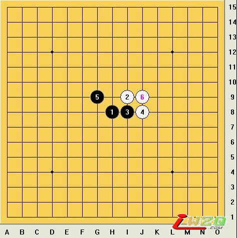
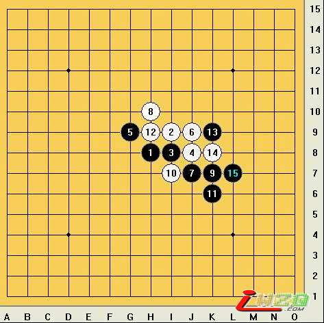
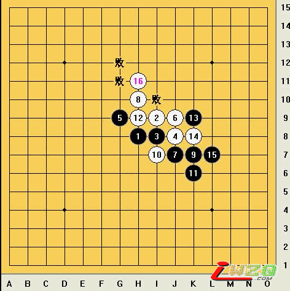
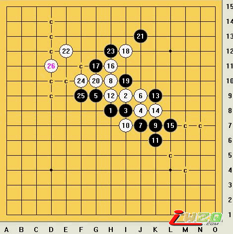
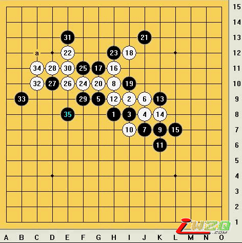

真心：云月和雨月开局中的一个区别
#1 真心：云月和雨月开局中的一个区别 作者：有志青年 发表时间：2008-11-10 14:54:59
很多五子棋朋友都认为云月和雨月是一样的，其实雨月和云月开局也有很多不同的地方。因为有盘端问题，所以云雨开局有很多区别。 今天我举一个例子来说明云月和雨月开局的不同之处。

上图是云月开局的变化，黑5是云月开局中常见的一个打点。白6最强。这个内容，雨月开局也有相似的部分，因为它可以和残月相通，所以和云月开局的这个变化有点区别，主要的区别就是，雨月开局向左边多用了一个格子。

15手在云月开局中是个败招。但是放在雨月开局，这个15手黑棋的下法就不是败招，而是黑棋中后盘的强招

（上图）云月开局中，白16是正确的下法，之后，黑棋17手走在图上标“败”的地方，黑棋都是要输的，可以这样说：16手白棋后，白必胜。

上图是云月开局，白16后，黑白强防和进攻的下法。白26手后，黑棋27下在图上标有C地方，都是要输了。可以说到26手后，黑棋已经无解。白必胜。

上图是云月黑25手后，白棋最后必胜图，但是这最后的变化图，如放在雨月开局中，就不是这样了，因为白棋最后争夺的部分是在棋盘左上方发展，在雨月开局中，棋局的走势要偏左一格。导致雨月开局这个部分白最后会因为左边少一个格子的空间而杀不出去，只能委屈的把优势让给黑棋。。
这个部分，云月白16后，白必胜；但雨月却因为盘端问题，白棋优势慢慢减少，而最终黑优。
以上只是云雨开局中的一个区别，因为空间有限，我不能一一分析，有兴趣的朋友自己可以拆解一下。
［ 灯塔连珠 于 2011-4-8 8:58:46 时花20金币送鲜花一朵］
［ 爱棋的猪 于 2012-1-3 14:17:11 时花20金币送鲜花一朵］
#2 Re:真心：云月和雨月开局中的一个区别 作者：掌棋宣传员 发表时间：2008-11-12 21:13:28
这么精华的帖子反倒没人顶了
没人顶我顶~~~
#3 Re:真心：云月和雨月开局中的一个区别 作者：oddgod 发表时间：2008-11-13 23:05:24
两个三打的区别……#4 Re:真心：云月和雨月开局中的一个区别 作者：瞬间的微笑 发表时间：2009-7-16 0:24:51
是很不错，，这个只是里面的一个部分，，还有其他的，也和你说的一样，都是因为格子不够，，从而导致杀不了，#5 Re:真心：云月和雨月开局中的一个区别 作者：风城 发表时间：2009-7-16 7:07:41
白22 26精妙无比.....后手下这么险的棋,太厉害了
#6 Re:真心：云月和雨月开局中的一个区别 作者：月光公主 发表时间：2009-9-4 15:51:24

#7 Re:真心：云月和雨月开局中的一个区别 作者：慕容晓文 发表时间：2009-10-15 17:37:32
分析不错，好帖#8 Re:真心：云月和雨月开局中的一个区别 作者：裁决殿雪月 发表时间：2009-10-15 18:45:35
看到这么好的帖子真想给sov#9 Re:真心：云月和雨月开局中的一个区别 作者：裁决殿雪月 发表时间：2009-10-15 18:47:02
看到这么好的帖子真想给楼主加一个威望值，可惜俺没这权力啊！！！！！！！！！！！！！#10 Re:真心：云月和雨月开局中的一个区别 作者：烦死了 发表时间：2009-12-31 22:04:33
有意思！
#11 Re:真心：云月和雨月开局中的一个区别 作者：岑小鱼 发表时间：2011-4-3 22:55:52
正好有朋友说起残月里相应11的变化...顶起来方便看看